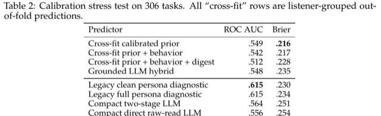
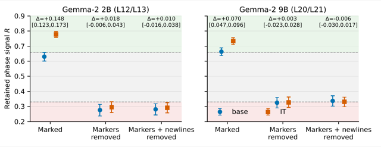
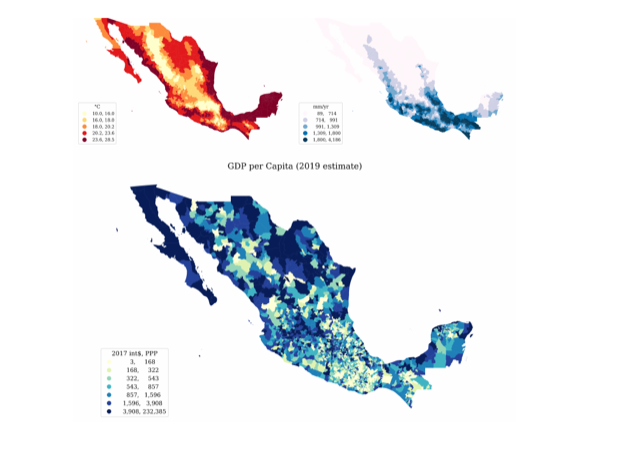
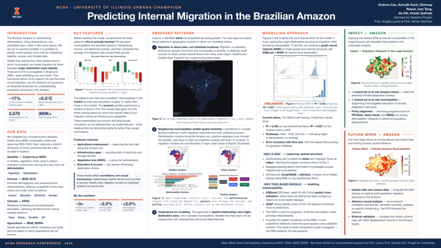
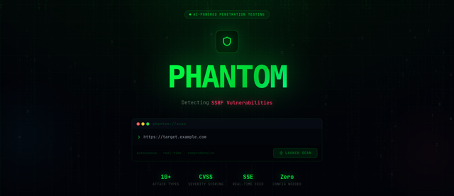
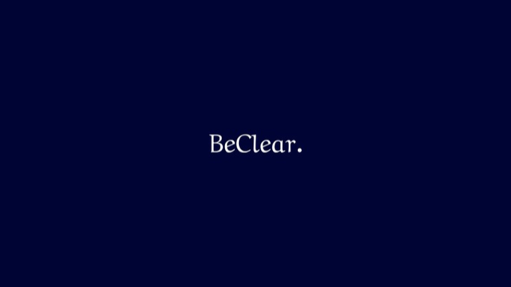
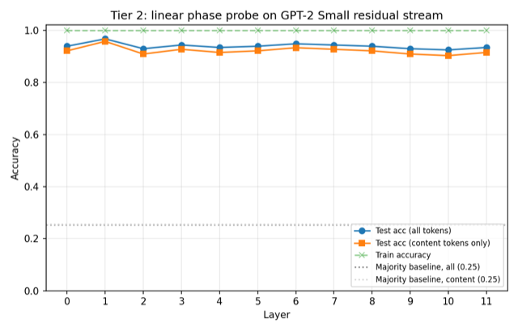

About me
I am an undergraduate at the University of Illinois Urbana-Champaign, completing a B.S. in Computer Science with a minor in Statistics in three years (James Scholar, expected May 2027). I work in the Alta Research Group with Prof. Hao Peng, where I lead clinical-sim, a reinforcement-learning environment for sequential clinical diagnosis, and study context hand-off in multi-stage coding agents with Shivam Agarwal.
Before that I was an AI Research Intern at Pocket FM in San Francisco, working with Vasu Sharma, Head of AI; a member of the AI Interpretability Group at Illinois, mentored by Xiaocong Yang; and a SPIN research intern at the National Center for Supercomputing Applications, mentored by Prof. Angela Lyons and Prof. Aiman Soliman.
My research asks how LLM agents reason and why they act as they do. Three questions organize the work:
- Evaluating reasoning step by step against expert judgment, with metrics that measure what they claim to. [clinical-sim, More Context Is Not Validation]
- Whether the reasoning an agent writes down is what actually drives its behavior, and what a probe that reads it is really reading. [ReAct phase probes, load-bearing reasoning]
- Agents that reason like experts: environments that score the process, not only the answer, so agents can be trained with RL rather than only evaluated. [clinical-sim, context hand-off in coding agents]
A habit runs through all of it: before improving a system, ask how we would know it is any good. My first listener-simulation agent at Pocket FM scored barely above chance and lost to every simple baseline. Auditing it, rather than tuning it, became the paper.
I graduate in May 2027 and am applying to graduate programs in computer science. If you work on agent evaluation or reasoning, I would be glad to hear from you.
News
- Started leading clinical-sim in the Alta Research Group: an interactive simulator for training and evaluating AI agents on sequential clinical diagnosis, built with physician collaborators.
- Sherpa, Pocket FM's AI writing platform, launched with Adaptation, the localization component I built.
- Joined the Alta Research Group at UIUC, advised by Prof. Hao Peng. "More Context Is Not Validation" was accepted at the Social Simulation Workshop at COLM 2026 (poster).
- Phantom was selected for Y Combinator's Startup School in San Francisco, with $25K in compute credits from YC partners.
- Started as an AI Research Intern at Pocket FM (San Francisco). Received an NCSA Letter of Recognition from Director R. Srikant for the SPIN migration project.
- Joined the AI Interpretability Group at Illinois. Presented "Predicting Internal Migration in the Brazilian Amazon" at the NCSA Students Research Conference.
- Built Phantom, an autonomous web penetration-testing agent, as team lead at HackIllinois 2026.
- Began the SPIN research internship at NCSA. Joined OTCR Consulting as Technology Partner and founded its technology department.
- Software Engineer Intern at Pocket FM (Bangalore): built the Blockbuster Engine.
- Started at the University of Illinois Urbana-Champaign.
- Winner (1st of 2,000+), New York Academy of Sciences Global Challenge, as team lead of "Intelligent Forests".
Publications
-

More Context Is Not Validation: A Baseline-First Audit of Action-Grounded LLM Listener Agents
Social Simulation Workshop at COLM 2026 (non-archival), poster
Abstract
LLM agents can generate individualized audience reactions before those reactions are behaviorally valid. We present a baseline-first audit of listener simulation for audio storytelling, separating three questions: whether a representation changes an LLM's predictions, whether the predictions beat a leakage-safe calibrated alternative, and whether the behavioral label measures the intended construct. On 1,199 listener–show tasks across four models, evidence-cited action memory reduces Brier error relative to summary personas for every model, but reliable ROC AUC gains appear only for two. On a separate 306-task cohort, a listener-grouped calibrated prior achieves Brier 0.216, compared with 0.235 for a grounded LLM hybrid. On 150 warm-user tasks, adding historical content digests worsens error. A raw-data audit further shows that episode-position events mix listening, autoplay exposure, skipping, and missing playtime telemetry. More context can improve a representation, but does not by itself establish predictive or construct validity.
-

When ReAct Phase Probes Look Abstract: Cue-Dependent Decodability in Gemma-2 2B and 9B
Sole-author manuscript, 2026. Work done in the AI Interpretability Group at Illinois.
Abstract
Linear probes can decode the current phase of a ReAct trace with near-perfect accuracy, inviting an interpretation in terms of an abstract reasoning state. We test that interpretation in Gemma-2 base and instruction-tuned (IT) models at 2B and 9B. Natural-trace probes peak at layers 12–13 and remain near 0.98 accurate after markers and newlines are removed. A preregistered content-and-position-decorrelated dataset changes the conclusion: at 2B, marked traces retain substantial signal, but removing markers reduces both models to R ≈ 0.28 and closes the IT–base gap. At 9B, IT–base invariance after cue removal replicates. Feature evidence at 2B corroborates content entanglement: 28 of 30 top phase-selective sparse-autoencoder slots are content-domain detectors. High natural decodability is cue-dependent; the robust cross-scale result is IT/base invariance after cue removal, not a scale-universal abstract phase variable.
-

Beyond Gravity Models: Predicting Human Migration with Spatial Gates and Graph Neural Networks
Co-authored manuscript, 2026 (NSF REU, University of Illinois Urbana-Champaign). * equal contribution
A graph neural network for internal migration that beats gravity-model baselines by adding a spatial gate and an income-conditioned climate gate.
-

Predicting Internal Migration in the Brazilian Amazon
NCSA Students Research Conference, April 2026, poster
Research experience
-
Alta Research Group, University of Illinois Urbana-Champaign
Aug 2026 – presentUndergraduate Researcher · advisor: Prof. Hao Peng
clinical-sim: an RL environment for sequential clinical diagnosis (project lead)
- Formulated diagnosis as a POMDP: from a one-line presentation, the agent questions, examines, and orders labs, imaging and procedures before committing to a diagnosis. Extends Microsoft's SDBench, which scores only the final diagnosis and its cost, to step-level comparison with physicians on 1,400+ real cases transcribed from physicians reasoning aloud.
- Built in Python: an LLM gatekeeper that returns only the finding requested, never interprets results, and withholds answer-revealing evidence until the agent commits; a deliberative agent that logs its belief state each step (ranked differential with probabilities, evidence, rationale, expected result) and checks its consistency before diagnosing; SDBench's 5-point judge plus process metrics (coverage of physicians' actions, and how the agent's differential and confidence track theirs).
- Served Qwen3.5-9B with vLLM on NCSA Delta A40 GPUs (Slurm) alongside GPT-5.6 behind one client, with a content-addressed cache that makes every episode deterministic, resumable and replayable.
- Pilot (10 cases per model): both models diagnosed fewer cases correctly when gathering evidence themselves than when given the full case; a trace audit tied part of the gap to two gatekeeper bugs, now being fixed. Next, with physician collaborators: a "living patient" layer (disease progression, treatment effects, test turnaround and Medicare-based costs, noisy tests, treat/wait/transfer actions) so agents can be trained with RL, not only evaluated.
Context hand-off in multi-stage coding agents (with PhD student Shivam Agarwal)
- Question: how much of what exploration sub-agents learn reaches the agent that writes the fix? Worked in the group's four-stage pipeline on OpenAI's Codex CLI (GPT-5.6) in Docker: explore (parallel sub-agents in separate git worktrees, emitting schema-checked JSON reports), synthesize, compact, solve, on DeepSWE (113 tasks) and SWE-ReBench (110).
- Designed and ran six hand-off variants on the base pipeline: a compacted summary; a fresh solver given the full report; a requirements brief that rules out re-exploration; a single-explorer ablation; findings injected into the solver's live session; a self-verification arm. Replicated an oracle-context study on Claude Code with Claude Sonnet 5 (327 runs).
- Built the evaluation: a 30-task dev set picked by leaderboard pass rates (83 held out), paired significance tests, and log-forensics tooling over Codex's JSONL logs.
- Findings: compaction discarded most of the exploration report (median 11,500 → about 3,300 characters), and solvers resumed from an earlier session nearly stopped spawning helper sub-agents (2.5 per task → 0–0.4), the leading explanation for why two tuned pipelines solved 49 and 51 of the 83 held-out tasks versus 59 for the baseline.
- Traced three tasks that failed even with the reference patch to infrastructure faults (a kernel inotify limit shared by root containers; a test-runner pool sized for 128 CPUs in a 2-CPU container); fixed the harness without touching graded tests and regraded saved patches (baseline 73 → 75 of 113 on DeepSWE).
Load-bearing reasoning and multi-agent security (early stage)
- Two connected questions in multi-agent coding safety: whether sub-agents can covertly pass confidential data past an LLM monitor, and whether the reasoning agents write down before acting is causal for what they do. Described here only at a high level.
-
AI Interpretability Group, University of Illinois Urbana-Champaign
Apr 2026 – presentUndergraduate Researcher · mentor: Xiaocong Yang
Do ReAct phase probes read an abstract representation? (sole-author manuscript)
- Asked whether Gemma-2 represents ReAct phase (Thought / Action / Observation) abstractly, and whether instruction tuning reshapes it. Built the stack (TransformerLens, sparse autoencoders, probing and ablation pipelines) and ran a 26-layer, 780-fit probe sweep on Slurm over base and instruction-tuned Gemma-2 2B, then replicated on 9B.
- Instruction tuning left phase decodability unchanged (IT − base within ±0.002 across all 780 fits), falsifying the hypothesis that fine-tuning reshapes phase geometry. Phase stayed about 98% decodable at layer 12 with markers and newlines stripped, yet 28 of the 30 most phase-selective SAE features detect content type, and a position-decorrelation control showed the signal decomposes into marker, content and position cues rather than an abstract phase variable.
- Preceded by a one-week GPT-2 Small pilot (ReAct_interp) that found phase trivially decodable at every layer and listed the controls it had not run; that list became the preregistered study.
-
National Center for Supercomputing Applications (NCSA)
Aug 2025 – presentSPIN Research Intern · mentors: Prof. Angela Lyons, Prof. Aiman Soliman
Predicting internal migration in the Brazilian Amazon (six-student team)
- Where do people move, not just how many leave, as deforestation and warming intensify? Modeled 300K+ migration flows between Brazil's 5,565 municipalities with 135 features each (census, climate, NDVI, agriculture).
- Built graph neural networks over a geographic-neighbor graph (never from the flows being predicted) with distributed multi-GPU training on NCSA Delta; the revised pipeline feeds GNN embeddings to gradient-boosted trees.
- Findings (correlational): the hottest quintile shows about 3× the out-migration of the coolest; the poorest quintile shrinks (−2.2%) while the richest grows (+2.0%); SHAP ranks agricultural employment and missing electricity and sewage above income. Presented at the NCSA Students Research Conference (Apr 2026); extending to the 2022 Census.
-
Pocket FM, San Francisco
May 2026 – Aug 2026AI Research Intern · manager: Vasu Sharma, Head of AI
Listener-agent simulation (first-author paper)
- After a summary-based persona agent scored near chance in a pilot (AUC 0.558) and lost to every simple non-LLM baseline, built a baseline-first harness: 1,199 tasks across four frontier LLMs, grouped cross-fitting, bootstrap confidence intervals.
- Findings: grounding agents in users' past actions lowered Brier score for all four models but raised ROC AUC for only two (+0.072, +0.058); a calibrated non-LLM prior beat the grounded LLM hybrid (Brier 0.216 vs. 0.235 on 306 tasks); adding digests of users' histories made predictions worse (Brier +0.013 on 150 tasks).
- Audited the engagement label the project relied on and found it mixed exposure, skipping and missing telemetry (11.3% of rows under 3 s of playtime); specified the replacement event definition used for downstream modeling.
Multimodal user simulation and production LLM systems
- Built audio-visual user-simulation models over 3,000+ shows and promos, the company's first predictor of user response to visual promos (63% accuracy), developed with partner startups Simile, Listen Labs and Kairosity.
- Built Adaptation, the localization component of Sherpa, Pocket FM's AI writing platform (launched Sept 2026): it rewrites full scripts in another language and adapts names, settings and cultural references; cut its cost by about 50%.
-
Pocket FM, Bangalore
May 2025 – Jul 2025Software Engineer Intern
- Built the Blockbuster Engine, a launch-outcome predictor combining LoRA-tuned LLMs with gradient-boosted trees and neural networks: 80% accuracy vs. a 34% baseline; after deployment, unsuccessful content launches fell 40%.
-
OTCR Consulting, University of Illinois Urbana-Champaign
Aug 2025 – presentTechnology Partner · founded the firm's technology department
- Lead 21 technology consultants on internal software (operations dashboard, recruiting and assessment platforms, a RAG knowledge service), client projects (a healthcare-AI startup; an enterprise agentic-AI program) and technical trainings.
Projects & ventures
-

Phantom, autonomous web penetration-testing agent
A Playwright crawler maps a target's attack surface; a ReAct loop plans and executes multi-step exploit chains (SQL injection, XSS, IDOR, CSRF, authentication bypass) and returns CVSS-scored findings with reproduction steps. Selected for Y Combinator's Startup School in San Francisco (July 2026), with $25K in compute credits from YC partners (OpenAI, Anthropic, AWS, Azure).
-

BeClear, AI college-admissions advising agent
A RAG-based advising agent with LoRA-fine-tuned models; 200+ users across three partner schools. Acquired in 2025 by a group of schools in India.
-
Adaptation (Sherpa, Pocket FM)
The localization component of Pocket FM's AI writing platform: rewrites full scripts into a target language and adapts names, settings and cultural references rather than translating them. Cut the service's cost by about 50%.
-
Blockbuster Engine (Pocket FM)
A launch-outcome predictor that ensembles LoRA-tuned LLMs with gradient-boosted trees and neural networks, deployed as microservices: 80% accuracy vs. a 34% baseline, and a 40% drop in unsuccessful launches after deployment.
-
Medical-policy simulator for a stealth healthcare-AI startup
Replays a payer's historical claims against proposed policy edits and forecasts the cost impact before the policy ships: see what a coverage rule would have cost, by replaying claims that already happened rather than estimating.
-

ReAct Interp, the GPT-2 pilot
Found ReAct phase trivially decodable at every layer of GPT-2 Small (about 93% vs. a 25% baseline), read the flat accuracy curve as a warning sign, and listed the controls it had not run. The precursor to the preregistered Gemma-2 study.
Open source
Bug fixes upstream to the tools I use for research. Seven merged pull requests so far, plus open pull requests to PyTorch, vLLM, LiteLLM and Prefect. All pull requests →
- TransformerLens#1649 Respect
use_parallel_residualin the GPT-NeoX adapter · #1634 Do not prepend a BOS token the tokenizer does not have - OpenClaw#121283 Fix prompt caching on Claude Opus 5 and Sonnet 5 · #124293 and #123083 infrastructure fixes AI-assisted, disclosed
- marimo#10498 Raise a helpful error for invalid radio/multiselect option names
- pylint#11358 Ignore
collections.abc.CallableandBufferin too-many-ancestors
Honors & education
- 2026NCSA Letter of Recognition from Director R. Srikant for outstanding contributions to a SPIN project, nominated by mentor Prof. Angela Lyons.
- 2026Y Combinator Startup School, San Francisco, with $25K in compute credits from YC partners, for Phantom.
- 2024–26James Scholar Honors and Dean's List (Fall 2024, Spring 2025, Fall 2025), University of Illinois Urbana-Champaign.
- 2023Winner (1st of 2,000+), New York Academy of Sciences Global Challenge, as team lead of "Intelligent Forests", a machine-learning approach to predicting forest fires.
Education
B.S. in Computer Science, Minor in Statistics; James Scholar Honors. GPA 3.80/4.00. Completing the B.S. in three years.
Coursework: AI, Algorithms, Databases, Compilers, Numerical Methods; in progress: NLP, System Programming.
Skills
- Languages
- Python, C++, SQL, R, TypeScript
- ML
- PyTorch, Hugging Face, TransformerLens, vLLM
- Systems
- Docker, Slurm, Kubernetes, AWS